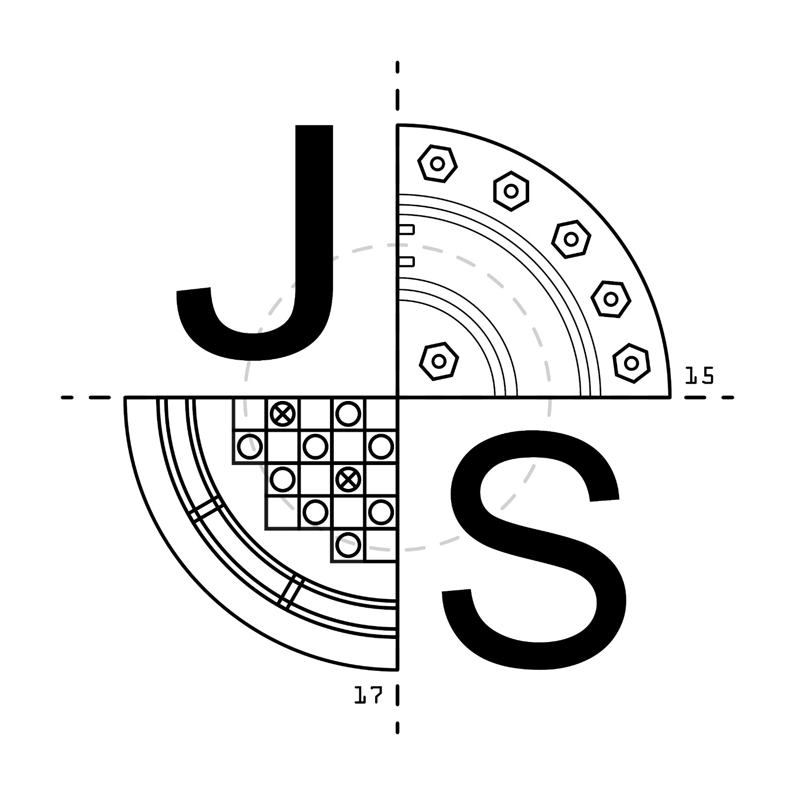

Jaderné setkání
Spouštíme řetězovou reakci budoucnosti
Jaderné setkání je neformální odborné setkání studentů, mládeže a nadšenců se zájmem o jadernou fyziku, energetiku a moderní technologie.
Akce přináší inspirativní prostředí pro setkání se zástupci z oboru, diskuse nad novými trendy v energetice i možnost navázání kontaktů s dalšími studenty.
Základní informace o akci
- Kdy: 2. listopadu (Sraz v 8:30, zakončení cca ve 12:00 obědem)
- Kde: Centrála skupiny ČEZ – Duhová 2/1444, Praha 4
- Pro koho: Studenti středních a základních škol, mladí nadšenci do jádra a energetiky
- Vstupné: Zdarma (podmíněno registrací z důvodu kapacity a vstupu do objektu)
Na co se můžete těšit?
Během dopoledne se zaměříme na stěžejní témata dnešní i budoucně orientované jaderné energetiky. Úvodní přednášku a diskusi na téma energie jako podstaty existence povede Josef Kaňkovský.
Solegyně a kolegové ze SMR týmu – Radana Šimůnková a Jakub Houdek – nás zasvětí do světa malých modulárních reaktorů a představí pokrok v této progresivní technologii. V rámci programu se k nám také rádi připojí kluci z týmu jaderných programátorů, kteří se podělí o své zkušenosti s vývojem středoškolského simulátoru blokové dozorny VVER 1000.
Celé setkání uzavřeme společnou besedou o příležitostech a výzvách energetiky i vzdělávání v ČR a neformálním obědem, kde bude prostor pro další dotazy a diskuzi.
Často kladené dotazy
Pro koho je akce primárně určena?
Jaderné setkání je otevřeno všem studentům základních a středních škol i dalším zájemcům o jadernou fyziku a energetiku.
Kolik stojí účast na akci?
Účast je zdarma (včetně oběda pro účastníky). Podmínkou je včasná online registrace z důvodu omezené kapacity a bezpečnostních rules budovy ČEZ.
Jak se na místo dostanu?
Sraz je na centrále ČEZ (Duhová 2/1444, Praha 4). Místo je dobře dostupné z metra C Budějovická nebo Pankrác.
Partneři a podporovatelé
Akce vzniká za podpory významných institucí a partnerů v oboru:
Registrace na Jaderné setkání je otevřena!
Místa jsou omezená. Zarezervujte si své místo na akci 2. listopadu v centrále ČEZ.
Zaregistrovat se na akci →